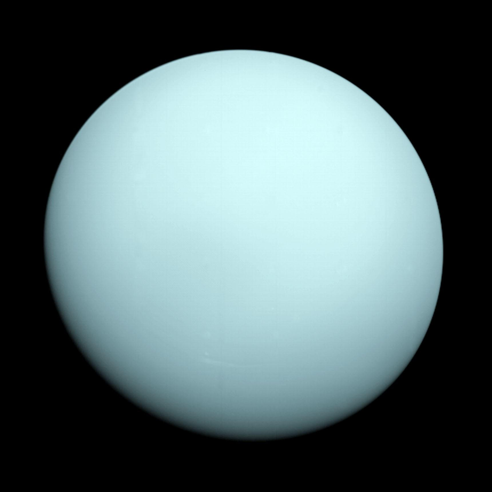

What is a Planet?

A planet is a celestial body that (a) is in orbit around the Sun, (b)
has sufficient mass for its self-gravity to overcome rigid body forces
so that it assumes a hydrostatic equilibrium (nearly round) shape, and
(c) has cleared the neighborhood around its orbit.
Read more about Planet
Our Solar System

The solar system has one star, eight planets, five dwarf planets, at
least 290 moons, more than 1.3 million asteroids, and about 3,900
comets.
Read more about Solar systems
All Planets
The solar system has eight planets: Mercury, Venus, Earth, Mars,
Jupiter, Saturn, Uranus, and Neptune.
Read more about Planets
Mercury

Mercury—the smallest planet in our solar system and nearest to the
Sun—is only slightly larger than Earth's Moon.
Read more about Mercury
Venus

Venus is the second planet from the Sun, and the sixth largest planet.
It’s the hottest planet in our solar system.
Read more about Venus
Earth

Earth – our home planet – is the third planet from the Sun, and the
fifth largest planet. It's the only place we know of inhabited by
living things.
Read more about Earth
Mars

Mars is no place for the faint-hearted. It’s dry, rocky, and bitter
cold. The fourth planet from the Sun, Mars, is one of Earth's two
closest planetary neighbors (Venus is the other).
Read more about Mars
Jupiter

Jupiter is a world of extremes. It's the largest planet in our solar
system.
Read more about Jupiter
Saturn

Saturn is the sixth planet from the Sun and the second largest planet
in our solar system.
Read more about Saturn
Uranus

Uranus is the seventh planet from the Sun, and it's the third largest
planet in our solar system – about four times wider than Earth.
Read more about Uranus
Neptune

Dark, cold and whipped by supersonic winds, giant Neptune is the
eighth and most distant major planet orbiting our Sun.
Read more about Neptune